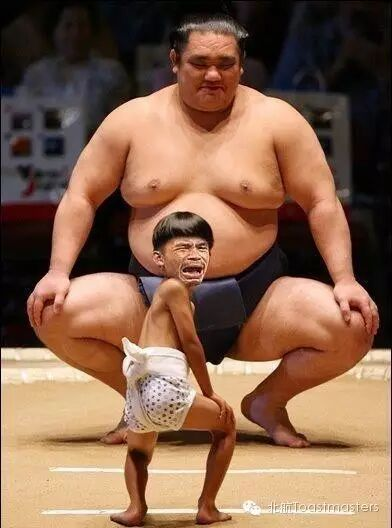
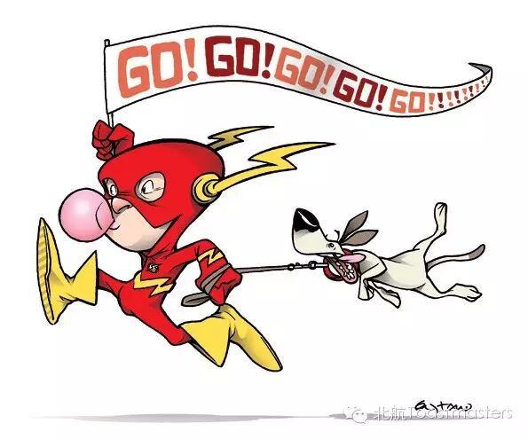

Challenge
TM：Joshua
TTM：Fiona

Can you remember the first time you can stand, walk, ride on a bicycle, or win an impossible match?
Maybe you don’t, but apparently behind that, there must be stories, about failures, tears and joy.
I don’t know why, when I recall all these memories, I feel uncomfortable. I am agitated and nervous, I feel lost. I have been always busy escaping from something, and then finding excuses for it. And that something is Challenge.
Challenge used be our friend, it gave us lessons, tutored us growing, but unfortunately somewhere along the way we lost our nature to challenge:
“This task is too complicated, never met before, I won’t make it”
“Jesus Christ! This girl is gorgeous, I won’t try to ask her out, I don’t have a chance!”
“This guy is a geek! He does have a gift, and he is also popular, how can I compete for a promotion?”
Sometimes we believe it is life and society which destroyed us. But a voice from inner side getting louder and louder and now we can hear:
“When did you lose your desire to challenge? Why don’t you try?”
Have you ever heard it before?
Come to join us at7:30pm in BEIHANG Toastmasters to figure out more about this puzzle.
Bloomfield
Go Go Go
CC1

Bloomfield, a handsome Beihang postgraduate who come from Chongqing, is our new member. He had been addicted to video games as a freshman, but during his second year in Beihang he become a fan of extreme sport, he established a secret organization asa junior and finally come back as a XUEBA before graduating. Lets wait and see what would our new member bring to us in his CC1.
Maggie
Poor memory
CC2
I did prepare for some comments here last night, but now I can’t remember…
But it doesn’tmatter, our beautiful Maggie will share with us her own stories about poor memory this week.
Take your draft with you by the way….
Toastmasters International (TI) is a nonprofit educational organization that operates clubs worldwide for the purpose of helping members improve their communication, public speaking, and leadership skills.

https://mp.weixin.qq.com/s/-zsZAYOqX7tcKz0OL3FaUQ
本页为抢救式本地归档，图文已永久保存。